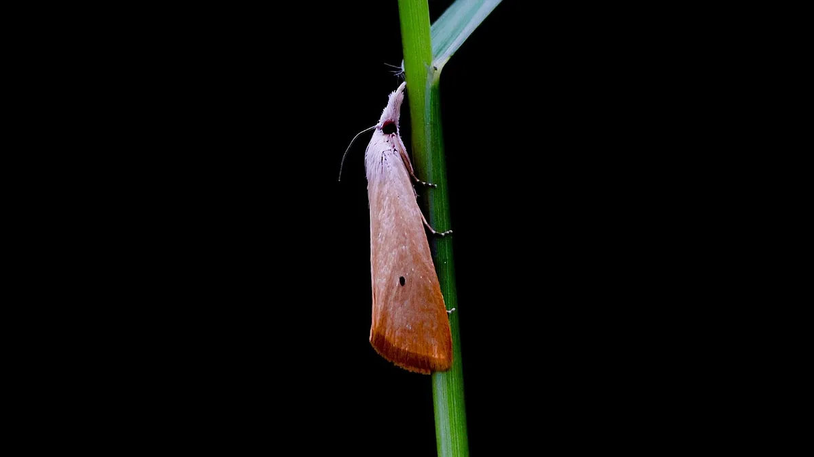

धान में तना छेदक
Yellow Stem Borer in Paddy — Dead Heart & White Ear Head
खेत हरा दिख रहा है, पर बीच-बीच में कुछ पौधों की नई पत्ती सूखी है। यही तना छेदक की पहली चेतावनी है — और इसे अनदेखा करने का नतीजा है खाली सफेद बाली।
✍️ Kunal Rajput — KrashiMitra⏱️ 10 मिनट पढ़ें📅 अगस्त 2026

धान का पीला तना छेदक — यही कीट 'डेड हार्ट' और 'सफेद बाली' का कारण बनता है।
हरा खेत, खाली बाली — तना छेदक का असली नुकसान
🌾
सफेद बाली
अंतिम नुकसान
📏
5% सूखी गोभ
कार्रवाई का स्तर
✂️
चोटी काटें
मुफ्त और असरदार उपाय
📖
भूमिका
धान का खेत दूर से पूरा हरा दिखता है, पर पास जाकर देखिए — बीच-बीच में कुछ पौधों की बीच वाली नई पत्ती (गोभ) सूखकर पीली-भूरी हो गई है, और उसे उँगली से खींचने पर वह बिना टूटे आसानी से बाहर आ जाती है। यही है तना छेदक (Stem Borer — Scirpophaga incertulas) का पहला निशान, जिसे किसान "सूखी गोभ" या "डेड हार्ट" कहते हैं।
सबसे महँगी गलती यहीं होती है — किसान इस अवस्था को नज़रअंदाज़ कर देता है, क्योंकि पौधा मरा नहीं है और खेत हरा दिख रहा है। लेकिन जब बालियाँ निकलती हैं, तब वही सुंडी अंदर ही अंदर तने को काट चुकी होती है और बाली सफेद, खोखली और दाना-रहित निकलती है — इसे "सफेद बाली" (White Ear Head) कहते हैं। सफेद बाली दिखने के बाद कोई दवा काम नहीं करती, क्योंकि नुकसान हो चुका होता है। इस लेख में पहचान, कब कार्रवाई करनी है (ETL), बिना पैसे के उपाय, ट्राइकोग्रामा कार्ड और असरदार दवाओं की सही मात्रा — सब आसान हिंदी में।
विज्ञापन
🐛
तना छेदक क्या है और यह छिपा क्यों रहता है?
तना छेदक एक पतंगे (moth) की सुंडी है। मादा पतंगा पत्ती के ऊपरी सिरे पर भूरे बालों से ढके अंडों का गुच्छा देती है। अंडों से निकली छोटी सुंडियाँ नीचे उतरकर तने में छेद करके अंदर घुस जाती हैं और वहीं पौधे का बीच वाला हिस्सा खाती रहती हैं।
यही इसकी सबसे बड़ी ताकत है — सुंडी तने के अंदर बैठी होती है, इसलिए ऊपर से किया गया साधारण छिड़काव उस तक पहुँचता ही नहीं। यही वजह है कि किसान दो-तीन बार दवा डालकर भी हार जाता है। असली मौका सिर्फ दो जगह है: अंडे की अवस्था और तने में घुसने से पहले की छोटी सुंडी।
💡
भारत में मुख्यतः पीला तना छेदक (Yellow Stem Borer) मिलता है, जो सिर्फ धान पर पलता है — यानी यह खेत में गन्ना, मक्का या दूसरी फसल से नहीं, बल्कि पिछली धान की फसल के ठूँठ (stubble) और आसपास के धान के खेतों से आता है। इसीलिए कटाई के बाद ठूँठ का प्रबंधन इतना मायने रखता है।
🔍
पहचान — खेत में क्या देखें
सूखी गोभ (डेड हार्ट): कल्ले के बीच की नई पत्ती सूखकर पीली-भूरी; बाकी पत्तियाँ हरी रहती हैं। यह बाली निकलने से पहले की अवस्था का लक्षण है।
खींचने पर आसानी से निकलना: सूखी गोभ को धीरे से खींचिए — तना छेदक ग्रस्त पौधे में वह बिना ज़ोर लगाए बाहर आ जाती है और उसका निचला सिरा सड़ा-कटा मिलता है। स्वस्थ पौधे में वह कसकर जुड़ी रहती है। यह सबसे भरोसेमंद जाँच है।
सफेद बाली (White Ear Head): बाली निकलने के बाद पूरी बाली सफेद, सीधी खड़ी और खाली — दाना नहीं बनता। खींचने पर पूरा गुच्छा निकल आता है।
तने पर छेद और मल: तने को चीरकर देखिए — अंदर सुरंग, हल्के पीले रंग की सुंडी और भूरा बुरादा-जैसा मल मिलता है।
अंडों का गुच्छा: पत्ती के सिरे के पास भूरे-सुनहरे बालों से ढका छोटा गुच्छा — यही अगली पीढ़ी है और इसे हाथ से हटाया जा सकता है।
पतंगे: शाम को खेत में हल्के पीले-सफेद रंग के पतंगे उड़ते दिखें, तो अंडे देने का दौर शुरू हो चुका है।
पहचान बिंदु
✅ स्वस्थ धान
❌ तना छेदक ग्रस्त
बीच की नई पत्ती (गोभ)
हरी, कसी हुई
सूखी, पीली-भूरी
गोभ खींचने पर
कसकर जुड़ी, टूटती है
आसानी से पूरी बाहर आ जाती है
बाली
झुकी हुई, भरे दाने
सफेद, सीधी, खाली
तना चीरने पर
साफ, ठोस
सुरंग, सुंडी और भूरा मल
पत्ती का सिरा
साफ
भूरे बालों वाला अंडा-गुच्छा
खेत का दृश्य
एक-सा हरा
बीच-बीच में सूखी गोभ वाले पौधे
💡
सूखी गोभ और झुलसा रोग में फर्क कैसे करें? झोंका या जीवाणु झुलसा में पत्तियों पर धब्बे या किनारे से सूखना दिखता है और कई पत्तियाँ प्रभावित होती हैं। तना छेदक में सिर्फ बीच वाली नई पत्ती सूखती है, बाकी हरी रहती हैं, और वह खींचने पर निकल आती है। यह एक जाँच दोनों को अलग कर देती है।
विज्ञापन
📏
कब दवा डालें — आर्थिक क्षति स्तर (ETL)
हर सूखी गोभ पर छिड़काव करना पैसे की बर्बादी है। धान का पौधा कुछ हद तक भरपाई कर लेता है — पड़ोसी कल्ले बढ़कर जगह भर देते हैं। कार्रवाई का पैमाना यह है:
कल्ले बनने की अवस्था में लगभग 5% सूखी गोभ — यानी 100 पौधों में 5 पौधों की गोभ सूखी दिखे, तब कार्रवाई का समय है।
1 अंडा-गुच्छा प्रति वर्ग मीटर या 1 पतंगा प्रति वर्ग मीटर — यह पहले से चेतावनी देता है, इससे आप सुंडी के तने में घुसने से पहले काम कर सकते हैं।
बाली की अवस्था में सहनशीलता बहुत कम है — यहाँ 1–2% सफेद बाली भी सीधा उपज का नुकसान है, इसलिए बाली निकलने से पहले वाला छिड़काव सबसे कीमती होता है।
निगरानी का तरीका आसान है: खेत में तिरछे (Z आकार में) चलते हुए 10 जगहों से 10-10 पौधे देखें, सूखी गोभ गिनें, और हर हफ्ते यही दोहराएँ। साथ में प्रकाश प्रपंच (लाइट ट्रैप) लगाइए — पतंगों की संख्या अचानक बढ़ना अगले हमले का सबसे पक्का संकेत है।
🛡️
बिना पैसे खर्च किए रोकथाम
रोपाई से पहले पौध की चोटी काटें: नर्सरी से उखाड़ी गई पौध के ऊपर के 2–3 से.मी. सिरे कैंची से काट दें। अंडे-गुच्छे पत्ती के सिरे पर ही होते हैं, इसलिए यह एक मुफ्त काम खेत में जाने वाले कीट को बहुत घटा देता है।
नर्सरी में अंडे-गुच्छे हाथ से हटाएँ: नर्सरी छोटी होती है — हफ्ते में एक बार घूमकर भूरे बालों वाले गुच्छे तोड़कर नष्ट करना सबसे सस्ता नियंत्रण है।
कटाई ज़मीन के पास से करें: ऊँचे ठूँठ में सुंडी अगली फसल तक ज़िंदा रह जाती है। कटाई के बाद ठूँठ की जुताई करके मिट्टी में मिला दें या पानी भर दें।
पक्षियों के लिए बसेरा (बर्ड पर्च) लगाएँ: प्रति एकड़ 8–10 लकड़ी की डंडियाँ। पक्षी पतंगे और सुंडियाँ खाते हैं — खर्च शून्य।
संतुलित नत्रजन दें: ज़रूरत से ज़्यादा यूरिया डालने पर पौधा मुलायम और रसदार होता है, जिस पर मादा पतंगा ज़्यादा अंडे देती है। यूरिया को तीन बार में बाँटकर दें, एक साथ नहीं।
गाँव में एक साथ रोपाई करें: अलग-अलग समय पर लगे खेत कीट को लगातार नई मुलायम फसल देते रहते हैं। एक साथ रोपाई से यह चक्र टूटता है।
प्रकाश प्रपंच (लाइट ट्रैप): प्रति हेक्टेयर एक — यह निगरानी भी करता है और पतंगे भी पकड़ता है।
🐝
ट्राइकोग्रामा कार्ड — सबसे सस्ता जैविक हथियार
ट्राइकोग्रामा जैपोनिकम (Trichogramma japonicum) एक बहुत छोटा मित्र-कीट है जो तना छेदक के अंडों के अंदर अपना अंडा दे देता है — यानी सुंडी पैदा ही नहीं होती। इसे गत्ते के छोटे कार्ड (ट्राइकोकार्ड) के रूप में KVK, जैव नियंत्रण प्रयोगशाला या कृषि विभाग से मिलता है।
मात्रा: लगभग 50,000 अंडे प्रति हेक्टेयर प्रति बार (सामान्यतः 4–5 कार्ड प्रति हेक्टेयर)।
कब: रोपाई के लगभग 30 दिन बाद से शुरू करके 5–6 बार, हर हफ्ते।
कैसे: कार्ड के छोटे टुकड़े करके खेत में पत्तियों के नीचे शाम के समय पिन/स्टेपल कर दें, ताकि सीधी धूप और बारिश से बचे रहें।
बड़ी शर्त: कार्ड छोड़ने के आगे-पीछे कुछ दिन कोई तेज़ कीटनाशक छिड़काव न करें — वरना मित्र-कीट भी मर जाएगा और पैसा बेकार जाएगा।
💡
नीम आधारित छिड़काव (नीम तेल 1500 ppm, लगभग 3–5 मि.ली./लीटर) अंडे देने वाली मादा को रोकता है और मित्र-कीटों के लिए अपेक्षाकृत सुरक्षित है — दो रासायनिक छिड़कावों के बीच यह अच्छा विकल्प है।
🧪
दवा — कौन सी, कितनी और कब
चूँकि सुंडी तने के अंदर छिपी रहती है, दानेदार (granule) दवाएँ खड़े पानी में डालना अक्सर छिड़काव से ज़्यादा असरदार होता है — दवा पानी और जड़ के रास्ते पूरे पौधे में जाती है। दानेदार दवा डालते समय खेत में 3–5 से.मी. पानी खड़ा होना चाहिए और 2–3 दिन तक निकलना नहीं चाहिए।
दवा (तकनीकी नाम)
सामान्य मात्रा
कैसे और कब
क्लोरएंट्रानिलिप्रोल 0.4% GR
लगभग 4 किग्रा/एकड़ (10 किग्रा/हेक्टेयर)
खड़े पानी में बुरकाव; परीक्षणों में सबसे अच्छा असर
क्लोरएंट्रानिलिप्रोल 18.5% SC
लगभग 0.3 मि.ली./लीटर
छिड़काव — अंडे और छोटी सुंडी की अवस्था में
कार्टाप हाइड्रोक्लोराइड 4% G
लगभग 7–8 किग्रा/एकड़ (18–20 किग्रा/हेक्टेयर)
खड़े पानी में बुरकाव; पुराना और भरोसेमंद विकल्प
कार्टाप हाइड्रोक्लोराइड 50% SP
लगभग 2 ग्राम/लीटर
छिड़काव का विकल्प
फिप्रोनिल 0.3% GR
लगभग 10 किग्रा/एकड़ (25 किग्रा/हेक्टेयर)
खड़े पानी में; अणु बदलने के लिए उपयोगी
नीम तेल 1500 ppm (जैविक)
लगभग 3–5 मि.ली./लीटर
शुरुआती अवस्था और दो छिड़कावों के बीच
⚠️
ऊपर दी गई मात्राएँ सामान्य अनुशंसा हैं। खरीदने से पहले डिब्बे के लेबल पर "धान" और "तना छेदक" लिखा है या नहीं ज़रूर देखें (CIB&RC पंजीकरण), और अंतिम मात्रा अपने कृषि विज्ञान केंद्र (KVK) या कृषि विभाग से पुष्टि करें — राज्य के अनुसार सिफारिश बदलती है। दानेदार दवा डालने के बाद खेत का पानी बाहर न निकालें, और कटाई से पहले की प्रतीक्षा अवधि (PHI) का पालन करें।
🚫
ये गलतियाँ कभी न करें
सफेद बाली दिखने के बाद दवा डालना — उस समय सुंडी अपना काम कर चुकी होती है; वह पैसा पूरी तरह बेकार जाता है।
सूखी गोभ को झुलसा रोग समझकर फफूँदनाशक डालना — गलत दवा, गलत खर्च। पहले गोभ खींचकर जाँच करें।
दानेदार दवा सूखे खेत में बुरकना — बिना खड़े पानी के दानेदार दवा घुलती नहीं और असर नहीं करती।
ज़रूरत से ज़्यादा यूरिया — मुलायम, गहरी हरी फसल पर मादा पतंगा सबसे ज़्यादा अंडे देती है।
ट्राइकोकार्ड छोड़कर तुरंत कीटनाशक छिड़कना — मित्र-कीट मर जाता है और दोनों खर्च बेकार।
हर बार वही दवा दोहराना — प्रतिरोध बन जाता है; अणु बदलिए, सिर्फ ब्रांड नहीं।
ऊँचा ठूँठ छोड़ देना — यही अगली फसल के लिए कीट का घर बन जाता है।
🗓️
कब क्या करें
अवस्था
ज़रूरी काम
नर्सरी
हफ्ते में एक बार अंडे-गुच्छे हाथ से हटाएँ; लाइट ट्रैप लगाएँ
ट्राइकोकार्ड शुरू करें; हफ्ते में एक बार सूखी गोभ गिनें
कल्ले बनने की अवस्था
5% सूखी गोभ पर कार्रवाई; ज़रूरत हो तो दानेदार दवा खड़े पानी में
गभोट (बाली बनने से ठीक पहले)
सबसे कीमती छिड़काव — सफेद बाली यहीं रुकती है
बाली निकलने के बाद
निगरानी; प्रतीक्षा अवधि का पालन, नया छिड़काव आमतौर पर बेकार
कटाई के बाद
ज़मीन के पास से कटाई, ठूँठ की जुताई या पानी भरना
✅
निष्कर्ष
तना छेदक हारता है समय से, दवा की मात्रा से नहीं। तीन बातें याद रखिए: रोपाई से पहले पौध की चोटी काटना (मुफ्त और बहुत असरदार), 5% सूखी गोभ पर कार्रवाई — उससे पहले नहीं और उसके बहुत बाद भी नहीं, और दानेदार दवा हमेशा खड़े पानी में।
जिस दिन सफेद बाली दिख जाए, उस दिन दवा का डिब्बा खोलना नहीं — अगली फसल की योजना बनाना सही कदम है।
विज्ञापन
❓
अक्सर पूछे जाने वाले सवाल
1धान में तना छेदक की पहचान कैसे करें?
सबसे पक्की पहचान है — कल्ले की बीच वाली नई पत्ती (गोभ) का सूख जाना, जबकि बाकी पत्तियाँ हरी रहें, और उस सूखी गोभ को खींचने पर उसका बिना ज़ोर लगाए पूरा बाहर आ जाना। बाली निकलने के बाद यही कीट सफेद, खाली बाली बनाता है। तना चीरने पर अंदर सुरंग, हल्के रंग की सुंडी और भूरा मल मिलता है।
2धान में तना छेदक की दवा कब डालनी चाहिए?
जब खेत में लगभग 5% सूखी गोभ दिखे — यानी 100 पौधों में 5 पौधों की बीच वाली पत्ती सूखी हो — तब कार्रवाई का सही समय है। इससे पहले छिड़काव पैसे की बर्बादी है और सफेद बाली दिखने के बाद कोई दवा काम नहीं करती, क्योंकि तब तक नुकसान हो चुका होता है। सबसे कीमती छिड़काव गभोट यानी बाली बनने से ठीक पहले का होता है।
3धान के तना छेदक के लिए सबसे असरदार दवा कौन सी है?
परीक्षणों में क्लोरएंट्रानिलिप्रोल 0.4% दानेदार (लगभग 4 किग्रा/एकड़) सबसे अच्छा पाया गया, उसके बाद क्लोरएंट्रानिलिप्रोल 18.5% SC (लगभग 0.3 मि.ली./लीटर) और कार्टाप हाइड्रोक्लोराइड 4% G (लगभग 7–8 किग्रा/एकड़)। दानेदार दवा डालते समय खेत में 3–5 से.मी. पानी खड़ा होना ज़रूरी है। लेबल पर धान और तना छेदक लिखा हो, और मात्रा KVK से पुष्टि करें।
4सूखी गोभ और झुलसा रोग में क्या फर्क है?
तना छेदक में सिर्फ बीच वाली नई पत्ती सूखती है और बाकी पत्तियाँ हरी रहती हैं, और वह खींचने पर आसानी से निकल आती है। झोंका या जीवाणु झुलसा में पत्तियों पर धब्बे पड़ते हैं या पत्ती किनारे से सूखती है और कई पत्तियाँ प्रभावित होती हैं। यह एक जाँच दोनों को अलग कर देती है — और गलत पहचान का मतलब है गलत दवा और बेकार खर्च।
5ट्राइकोग्रामा कार्ड कैसे और कब लगाएँ?
ट्राइकोग्रामा जैपोनिकम के लगभग 50,000 अंडे प्रति हेक्टेयर (सामान्यतः 4–5 कार्ड) रोपाई के 30 दिन बाद से हर हफ्ते, कुल 5–6 बार छोड़ें। कार्ड के छोटे टुकड़े करके शाम को पत्तियों के नीचे पिन कर दें ताकि धूप-बारिश से बचें। सबसे ज़रूरी शर्त — कार्ड छोड़ने के आगे-पीछे कुछ दिन तेज़ कीटनाशक न छिड़कें, वरना मित्र-कीट भी मर जाएगा।
6क्या रोपाई से पहले पौध की चोटी काटने से फायदा होता है?
हाँ — पौध के ऊपरी 2–3 से.मी. सिरे काट देने से खेत में जाने वाले अंडे-गुच्छे बहुत घट जाते हैं, क्योंकि मादा पतंगा अंडे पत्ती के सिरे पर ही देती है। यह उपाय पूरी तरह मुफ्त है, रोपाई के साथ ही हो जाता है, और किसी दवा से पहले किया जाने वाला सबसे सस्ता नियंत्रण है।
7तना छेदक की दवा डालने पर भी असर क्यों नहीं होता?
क्योंकि सुंडी तने के अंदर बैठी होती है और ऊपर से किया गया छिड़काव उस तक पहुँचता ही नहीं। असर सिर्फ दो अवस्थाओं में होता है — अंडे की अवस्था और तने में घुसने से पहले की छोटी सुंडी। इसीलिए खड़े पानी में दानेदार दवा ज़्यादा कारगर रहती है, क्योंकि वह जड़ के रास्ते पूरे पौधे में पहुँचती है।
8अगली फसल में तना छेदक कम करने के लिए क्या करें?
कटाई ज़मीन के पास से करें और ठूँठ को जुताई करके मिट्टी में मिला दें या खेत में पानी भर दें — पीला तना छेदक सिर्फ धान पर पलता है और पिछली फसल के ठूँठ में ज़िंदा रहकर अगली फसल पर आता है। साथ ही गाँव में एक साथ रोपाई करें और यूरिया तीन बार में बाँटकर दें; ज़्यादा नत्रजन वाली मुलायम फसल पर अंडे सबसे ज़्यादा पड़ते हैं।
🌾
KrashiMitra.in — आपका विश्वसनीय कृषि साथी
मंडी भाव, सरकारी योजनाएं, बीज-खाद की जानकारी और फसल रोग उपचार — सब कुछ हिंदी में।